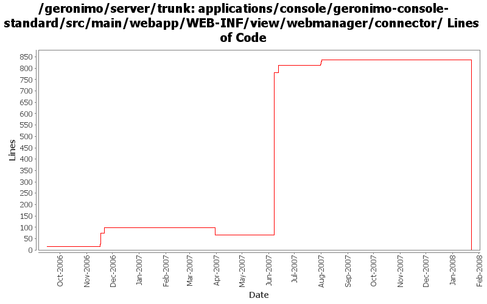

[root]/applications/console/geronimo-console-standard/src/main/webapp/WEB-INF/view/webmanager/connector

| Author | Changes | Lines of Code | Lines per Change |
|---|---|---|---|
| Totals | 39 (100.0%) | 911 (100.0%) | 23.3 |
| vamsic007 | 10 (25.6%) | 782 (85.8%) | 78.2 |
| kevan | 7 (17.9%) | 50 (5.5%) | 7.1 |
| pmcmahan | 7 (17.9%) | 49 (5.4%) | 7.0 |
| jbohn | 1 (2.6%) | 21 (2.3%) | 21.0 |
| jaydm | 2 (5.1%) | 9 (1.0%) | 4.5 |
| jdillon | 6 (15.4%) | 0 (0.0%) | 0.0 |
| gdamour | 4 (10.3%) | 0 (0.0%) | 0.0 |
| akulshreshtha | 2 (5.1%) | 0 (0.0%) | 0.0 |
(GERONIMO-3747) Moved applications/* to plugins/*
0 lines of code changed in 6 files:
GERONIMO-3386 work around connector form submission problem in internet explorer. using POST instead
of GET for the form submission avoids creating a long URL that IE can't process.
1 lines of code changed in 1 file:
GERONIMO-3350 final touches on administration for web connectors
22 lines of code changed in 2 files:
GERONIMO-3350 more portlet updates for the new WebManager apis. Add getKeystorePass and getTruststorePass
to http11protocol interface to support editing HTTPS connectors from the portlet without losing the passwd.
More tweaking to the ConnectorAttributes for jetty, this still needs some work.
15 lines of code changed in 1 file:
svn properties
3 lines of code changed in 1 file:
GERONIMO-3350 updates to web connector portlet for recent api WebManager api changes. This work
is not complete yet but should allow others to work on the tomcat and jetty connectors with some
UI support. Creating and editing secure connectors in particular is still very fragile.
The basic UI with some input validation seems to work OK. Had to comment out some of the
connector attributes for the jetty connectors because the kernel thinks that they are not persistent
attributes when it tries to create a new connector, even though the gbean info looks to me like they
should be, needs more investigation.
8 lines of code changed in 2 files:
Cleaning up formatting and removing tabs
9 lines of code changed in 2 files:
GERONIMO-2481 WebServers portlet: Create/Edit Tomcat Connectors should support editing of all supported connector attributes
o Introduced a checkbox to show/hide attributes newly added to the edit page in console.
35 lines of code changed in 2 files:
GERONIMO-2481 WebServers portlet: Create/Edit Tomcat Connectors should support editing of all supported connector attributes
716 lines of code changed in 2 files:
GERONIMO-2898 Drop MinThread attribute of jetty connector from ConnectorPortlet
Update JettySecureConnector interface
0 lines of code changed in 2 files:
Merging rev 482620 from branches\1.2
keystoreType and truststoreType have nothing to do with logLevel :o). Error existed ever since the file was added to svn.
2 lines of code changed in 1 file:
GERONIMO-2533 Password setup forms should use a confirmation field
25 lines of code changed in 1 file:
GERONIMO-2537 Integrating yet another patch supplied by Jay McHugh. Thanks Jaysvn status! Adds apache license header to files in applications/
50 lines of code changed in 7 files:
GERONIMO-1396 Provide consistent look and feel for table views in the web console across all portlets
21 lines of code changed in 1 file:
GERONIMO-2565 User confirmation on attempting to stop a web connector through WebServer portlet
0 lines of code changed in 2 files:
GERONIMO-2278 Problems in editing Jetty SSL Connector and the edit page in Geronimo Console
3 lines of code changed in 1 file:
GERONIMO-2404 Edit HTTPS Connector page does not display the connector name
1 lines of code changed in 1 file:
GERONIMO-2378 Problems in JavaScript validation code forms.js
GERONIMO-2379 Security Realms portlet - form field validation using javascript
GERONIMO-2380 Keystores portlet - Form field validation using javascript
GERONIMO-2382 Webservers portlet - Form field validation using javascript
GERONIMO-2388 JMS Server portlet improvement - field validation, reset button and show current task
All these patches have been provided by Vamsavardhana Reddy. Thanks for that!
0 lines of code changed in 4 files: